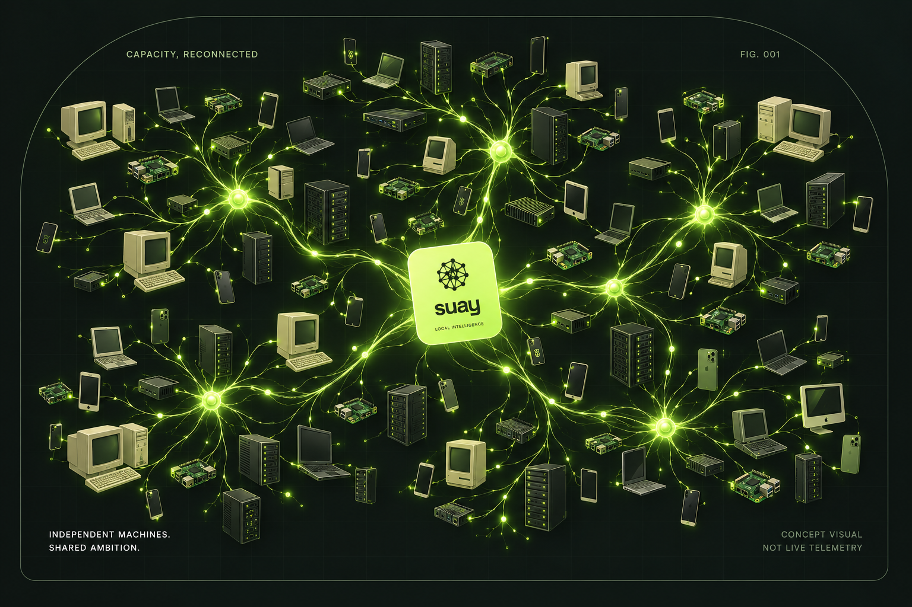
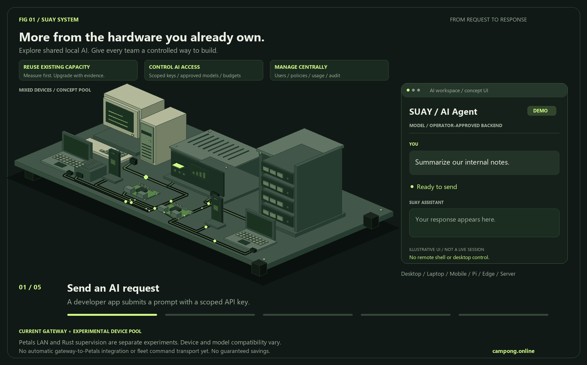
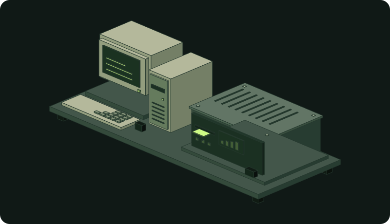
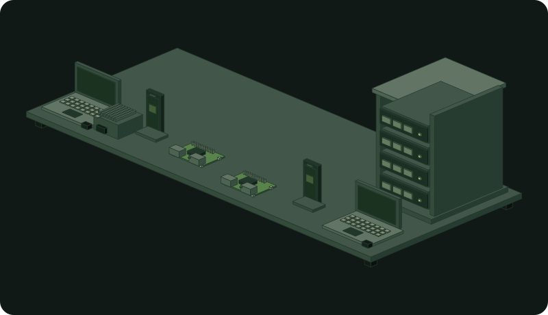
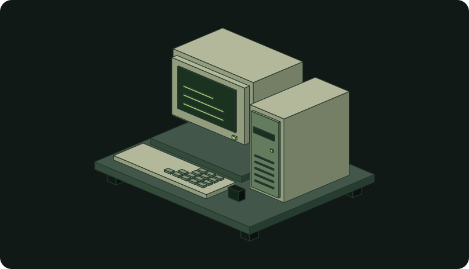
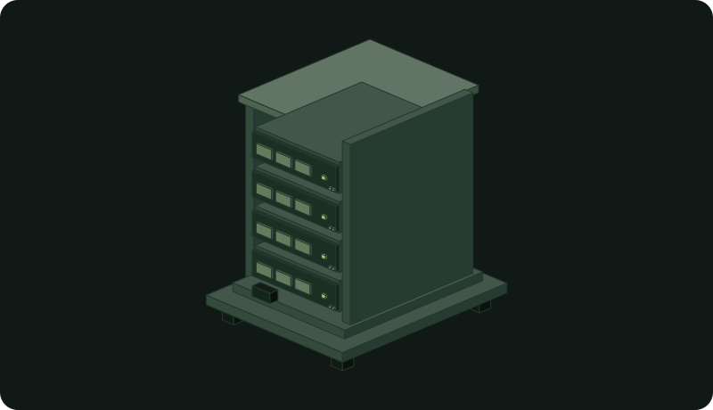

Python
Organization API · Petals LAN · Visitor analytics
versions/python ↗LOCAL AI / OPEN SOURCE / SHARED COMPUTE
SUAY ni mradi wa programu huria wa kushiriki rasilimali za kompyuta kwa AI ya ndani ya shirika. Una usimamizi wa ufikiaji, lango la majaribio la inference, na jaribio tofauti la Petals LAN.

Msimamizi huchagua modeli na backend zilizoidhinishwa. Watengenezaji hutuma maombi kupitia lango kwa kutumia funguo za API. Jaribio la Petals hugawa vitalu vya modeli katika LAN inayoaminika; bado halijaunganishwa kiotomatiki na lango.
Architecture ↗TWO SOURCE DIRECTORIES / DIFFERENT ROLES
Toleo la Python lina control plane na jaribio la Petals. Toleo la Rust husimamia michakato ya ndani na bajeti ya kumbukumbu; si uandishi mpya wa Petals. Visakinishi vya huduma asilia na fleet transport bado havijakamilika.
Organization API · Petals LAN · Visitor analytics
versions/python ↗Hardware snapshots · Memory admission · Local backend supervision
versions/rust ↗SUAY / SYSTEM ANATOMY

A developer app sends a prompt with a scoped API key.
START HERE / MACHINE BY MACHINE
Choose a path first. A runs the organization gateway. B runs the separate Petals compute pilot: start agents before the terminal client. Rust is optional local supervision.
Read the full machine-by-machine guide (Thai) ↗PATH A / ONE MANAGEMENT MACHINE

.venv-control/bin/python -m uvicorn control.app:create_app --factory --app-dir versions/python --host 127.0.0.1 --port 8090Linux/macOS launch after installation. The gateway has no bundled model. It does not automatically connect to the Petals pool.
Gateway installation guide ↗PATH B / EACH COMPUTE MACHINE

.venv-petals-agent/bin/python versions/python/compute/agent/auto_agent.pyExperimental trusted-LAN pilot. No separate coordinator program, manual role switch or universal device certification.
Coordinator and worker guide ↗PATH B / USER MACHINE / AFTER AGENTS

.venv-petals-client/bin/python versions/python/compute/client/app.py --coordinator http://AGENT_IP:8080 --max-new-tokens 32Replace AGENT_IP. This uses Petals P2P, not the 8090 gateway. The client is not a browser chat; the GIF’s AI Agent UI is illustrative.
Client installation guide ↗OPTIONAL / ONE LOCAL BACKEND

cargo run --manifest-path versions/rust/Cargo.toml --locked -- statusNot required for A or B. Rust does not replace the Python coordinator, workers or client.
Rust supervision guide ↗Msimbo asilia wa SUAY una leseni ya MIT. Modeli na dependencies zina masharti tofauti yanayopaswa kukaguliwa kabla ya matumizi ya kibiashara.
Hakuna dhamana. Mahitaji ya runtime, kumbukumbu na mtandao hutegemea kazi halisi. Mchoro wa vifaa si uthibitisho wa uoanifu.
Bado ni mradi wa majaribio. Vifaa na usalama vinahitaji kuthibitishwa. Uhamishaji wa modeli kiotomatiki na fleet integration bado havijakamilika.
git clone https://github.com/camponggogo/suay.gitMIT code · Model licenses vary · GitHub Sponsors: setup pending